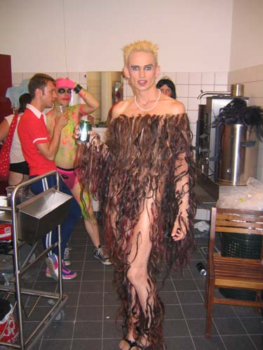
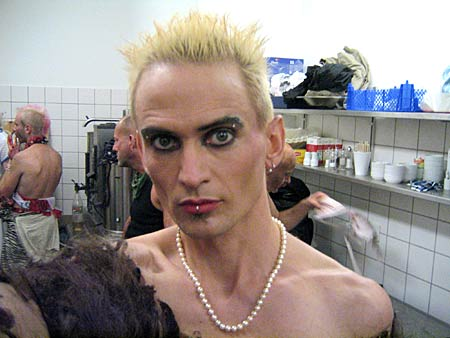
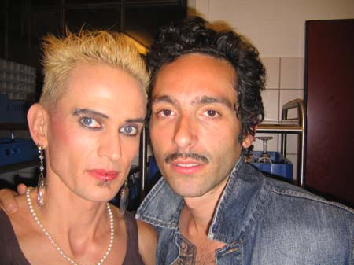
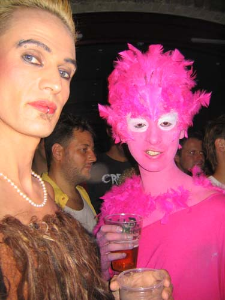
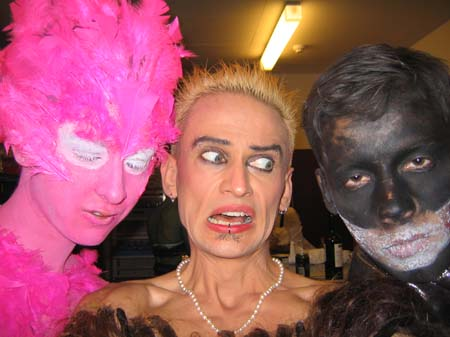

Dennis Agerblad Live at the dunst party "Shave Your Pet". Hal-55, Kødbyen, Copenhagen. |

Photo: Anett Ahrends.



Dennis Agerblad and Glamour To Kill.



Dennis Agerblad Live at the dunst party "Shave Your Pet". Hal-55, Kødbyen, Copenhagen. |




